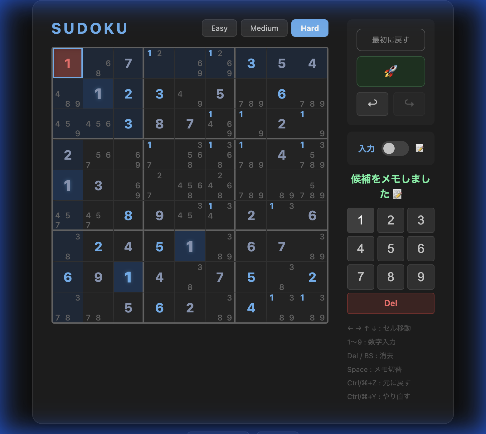

論理的ソルバーによる厳密な難易度制御と、 洗練されたUI（ダーク/ライト対応）を備えたブラウザベースの数独パズル。

▶ プレイする論理的な解法に基づく本格的な数独体験を提供します。
「地ならし（Smoothing）」と「探索（Exploration）」の2フェーズによる革新的アルゴリズムを搭載。ヒント数を最小22個まで削ぎ落としつつ、解きごたえのある高品質な問題を爆速で生成します。
Naked Single〜XY-Chainまで、解法に必要な戦略に基づいて難易度を厳密に定義。直感や運に頼らない、純粋な論理の世界を楽しめます。
1回押すとNaked Single / Hidden Singleで確定できるセルを自動入力。手順が進まない場合、空白セルがあれば候補メモを全入力・剪定します。
トグルスイッチで入力モードとメモモードをワンタッチ切替。モバイル画面でも操作しやすい配置。
最大127ステップの履歴管理。ロケットボタンの操作も実際の変化があった場合のみ1ステップとして記録されます。
ダーク/ライトモードの切り替えに加え、端末設定との連動も可能。日本語・英語の表示言語切り替えにも対応。
カメラや画像から数独の盤面を自動認識。OpenCV.js を使用した高度な画像処理により、手入力の手間を省いて即座にプレイ可能です。
各難易度は、パズルの解法に必要な最高度の戦略によって定義されます。
| レベル | 必要な戦略 | 説明 |
|---|---|---|
| Easy | Locked Candidates | 候補の数字が特定の行や列に限定されること（Pointing / Claiming）を利用した基本推論が必要。 |
| Medium | Pairs, Triples | 候補のペア（2国同盟）〜クアッド（4国同盟）を見つけて候補を除外する中級の推論が必要。 |
| Hard | Fish系, Wings, UR, Chains | Jellyfish 等の高度な魚系、Unique Rectangle（唯一解）、XY-Chain 等の多段階推論が必要。 |
キーボードとオンスクリーンキーパッドの両方に対応しています。
フレームワーク不使用。HTML + CSS + JavaScript のみで構築しています。